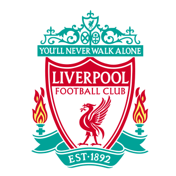
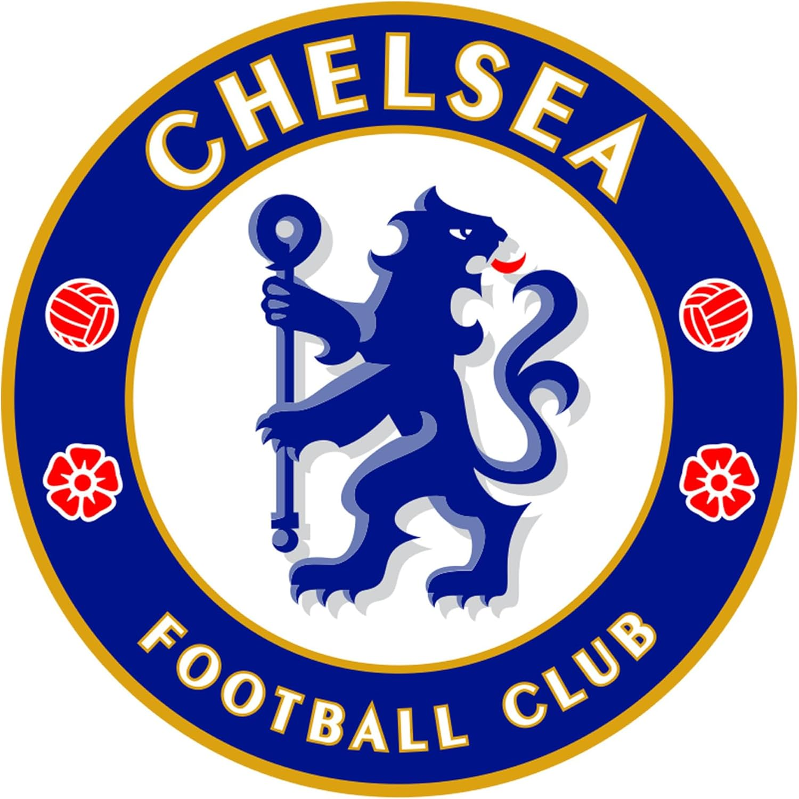

Equipos que forman el Big Six
Manchester United
Jugadores más destacados
- André Onana
- Bruno Fernandes
- Marcus Rashford
Estadio:
{kind=link}
Máximos goleadores de su historia
- Wayne Rooney: 253 goles
- Sir Bobby Charlton: 249 goles
- Denis Law: 237 goles

Liverpool
Jugadores más destacados
- Alisson Becker
- Mohamed Salah
- Virgil van Dijk
Estadio:
{kind=link}
Máximos goleadores de su historia
- Ian Rush: 339 goles
- Roger Hunt: 271 goles
- Mohamed Salah: 226 goles

Manchester City
Jugadores más destacados
- Ederson
- Kevin De Bruyne
- Erling Haaland
Estadio:
{kind=link}
Máximos goleadores de su historia
- Sergio Agüero: 260 goles
- Joe Hayes: 141 goles
- Raheem Sterling: 131 goles

Chelsea
Jugadores más destacados
- Robert Sánchez
- Enzo Fernández
- Nicolas Jackson
Estadio:
{kind=link}
Máximos goleadores de su historia
- Frank Lampard: 211 goles
- Bobby Tambling: 177 goles
- Didier Drogba: 164 goles
Tottenham
Jugadores más destacados
- Vicario
- Richarlison
- Son Heung-min
Estadio:
Máximos goleadores de su historia
- Harry Kane: 280 goles
- Jimmy Greaves: 266 goles
- Bobby Smith: 202 goles
Arsenal
Jugadores más destacados
- David Raya
- Martin Ødegaard
- Bukayo Saka
Estadio:
{kind=link}
Máximos goleadores de su historia
- Thierry Henry: 228 goles
- Ian Wright: 182 goles
- Robin van Persie: 132 goles